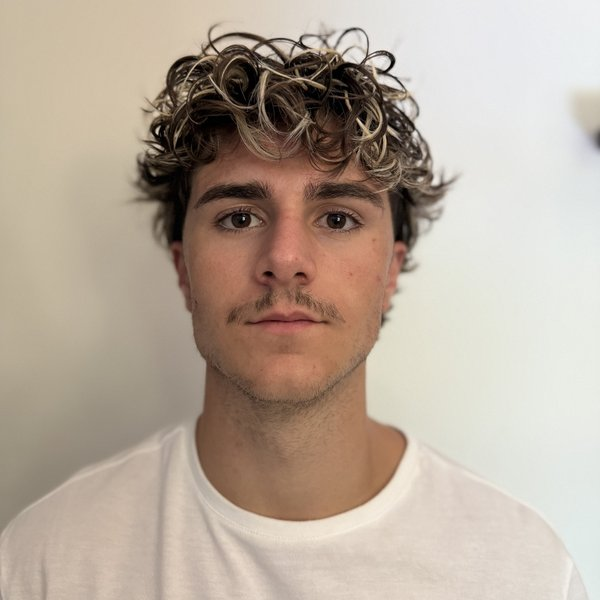

Bruce
Bouisson

Je sécurise et j'automatise des infrastructures Windows, Linux et réseau. Technicien cybersécurité en alternance chez Orano.
Je cherche un poste d'ingénieur sécurité ou d'administrateur systèmes et réseaux orienté sécurité. Mobile en France, à l'international ou en télétravail.
Ma méthode
Chaque projet suit le même chemin, du besoin à la production.
Besoin
Un besoin remonté par l'équipe, ou une amélioration que je propose.
Preuve de concept
Je construis et teste la solution dans un environnement dédié.
Documentation
Je rédige une documentation que l'équipe peut reprendre sans moi.
Production
La solution validée est déployée et maintenue.
Parcours
Quatre ans d'alternance, du support informatique à la cybersécurité.
-
2025 – 2027
Master Manager en ingénierie informatique
CCI Académie Vaucluse Provence, AvignonTitre RNCP niveau 7, spécialisation cybersécurité, en alternance.
-
Depuis 2024
Technicien supérieur en cybersécurité
Orano, Pierrelatte, alternanceProjets de sécurisation et d'automatisation au sein du service informatique, menés de la preuve de concept à la mise en production.
-
2024 – 2025
Bachelor Développeur Solutions Numériques Sécurisées
Campus CCI Vaucluse, AvignonParcours cybersécurité.
-
2022 – 2024
Technicien informatique
Ville d'Orange et communauté de communes, alternanceSupport utilisateurs, administration réseau, renouvellement du parc informatique.
-
2022 – 2024
BTS SIO option SISR
Nextech, AvignonSolutions d'infrastructure, systèmes et réseaux. Diplôme obtenu en 2024.
-
2022
Baccalauréat général
Lycée de l'Arc, OrangeSpécialités mathématiques et sciences de l'ingénieur, mention assez bien.
Projets
Les projets menés en entreprise sont décrits sans détail sur les environnements concernés.
Chez Orano
Automatisation du déploiement des postes de travail
Modernisation d'une chaîne de déploiement Windows existante vers une approche entièrement automatisée.
Gestion des mises à jour
Industrialisation du déploiement des correctifs sur les systèmes Windows et Linux.
Sécurisation des accès sans fil et segmentation réseau
Authentification Wi-Fi par certificat et isolement des équipements sur le réseau.
Évaluation de la sécurité d'équipements réseau
Analyse de vulnérabilités et recommandations de durcissement.
R&D en sécurité des communications
Veille et expérimentations autour des signaux radio et des objets connectés.
À la Ville d'Orange
Migration du parc vers Windows 11
Remplacement des machines et passage de l'ensemble des postes sous Windows 11.
Montée de version de GLPI
Migration de l'outil de gestion de parc et d'assistance vers sa dernière version.
À l'école et chez moi
Nuit du Hacking
Conception et organisation d'une compétition Capture The Flag pour mon école.
Homelab
Un laboratoire personnel, construit petit à petit, pour tester des technologies avant de les utiliser en entreprise.
Compétences
Systèmes
- Windows Server
- Windows 10 et 11
- Linux
Réseau et sécurité
- Pare-feu Fortinet
- Switchs et VLAN
- Wi-Fi 802.1X
- Analyse de vulnérabilités
Automatisation
- Ansible
- PowerShell
- Python
Virtualisation
- VMware
- Hyper-V
- Proxmox
Au quotidien
- Documentation technique
- Gestion de parc avec GLPI
- Français natif, anglais professionnel
Certifications
- OSCP en préparation2026 – 2027
- Introduction to Cybersecurity Cisco Networking Academy2024
- SecNumacadémie ANSSI2023
- Sensibilisation à la protection du secret DRSD2023
Hors du travail
Boxeur semi-professionnel en K1 et kickboxing depuis l'âge de 4 ans, j'ai aussi combattu en MMA chez Hexagone MMA.
Je suis bénévole au club First Impact Orange. Le ring m'a appris la discipline, la constance et le sang-froid, trois qualités qui me servent aussi en cybersécurité.
Me contacter
Pour un poste à partir de septembre 2027, ou simplement pour échanger.
bruce.bouissonitro@gmail.com